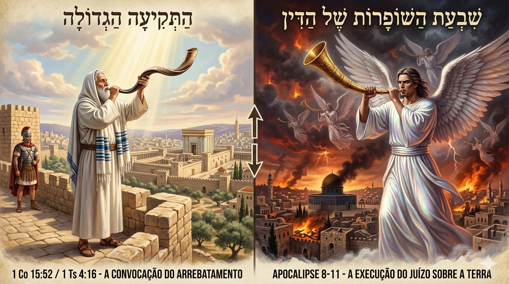

Essa é a "pedra de tropeço" de muitos que tentam misturar as cartas de Paulo com o livro de Apocalipse sem observar o contexto cultural. O erro comum é achar que a "Última Trombeta" de Paulo (1 Coríntios 15:52) é a 7ª Trombeta de João (Apocalipse 11:15).
Se fossem a mesma, a Igreja passaria por todo o caos das seis trombetas anteriores (sangue, fogo, gafanhotos do abismo), o que destruiria a tipologia da Arca que discutimos.
Aqui está a distinção técnica que traz segurança para a sua abordagem apologética:
Na tradição bíblica e militar romana/judaica, as trombetas tinham funções diferentes:
Como o ambiente é "flagrantemente judaico", Paulo (um fariseu instruído) estava se referindo à Festa das Trombetas (Rosh Hashaná).
Nessa festa, tocam-se 100 sons de trombeta (Shofar). O centésimo toque, o mais longo e final, é chamado tecnicamente de Tekiah Gedolah — a "Grande Trombeta" ou "Última Trombeta".
Para o judeu, esse som significa a abertura dos portões do céu e o início do julgamento. Para Paulo, esse é o tipo do Arrebatamento: o momento em que a porta da Arca se fecha e a Igreja é recolhida antes que o "Dia do Senhor" (as trombetas de juízo de João) comece.
Muitos tropeçam na escatologia por não entenderem que "Trombeta" na Bíblia não é um termo genérico, mas um código militar e litúrgico. Para o Pós-tribulacionista, a "Última Trombeta" de Paulo (1 Co 15:52) é a 7ª de João (Ap 11:15). Contudo, a exegese genuína revela que elas pertencem a calendários divinos diferentes.
Na cultura bíblica e romana, o som da trombeta determinava a ação do soldado.
• A Trombeta de Paulo (O Arrebatamento): É o som da "Partida". No acampamento romano, a Última Trombeta era o sinal para desmontar as tendas e marchar para fora. É um som de reunião e transformação. A Igreja ouve, muda de corpo e sai de cena.
• As Trombetas de João (O Juízo): São sons de "Ataque". Em Jericó (Josué 6), as trombetas anunciouvam a queda das muralhas e o início do massacre. As trombetas de Apocalipse não reúnem ninguém no céu; elas soltam fogo, sangue e pragas sobre a terra rebelde.
Paulo, como fariseu, escreve com a mente no calendário de Israel.
• Na Festa das Trombetas (Rosh Hashaná), tocam-se 100 sons. O 100º toque é o mais longo e sustentado, conhecido como Tekiah Gedolah (A Última Trombeta).
• Esse som anunciava o fechamento das portas do tribunal celestial.
• Aplicação: A "Última Trombeta" de Paulo é o som que fecha a porta da Arca. Quando ela toca, a Graça encerra seu ciclo e o Juízo (as trombetas de João) começa na sequência.
| Característica | A Última Trombeta (1 Co 15 / 1 Ts 4) | A Sétima Trombeta (Apocalipse 11) |
|---|---|---|
| Destinatário | A Igreja (A Noiva) | As Nações (Os Rebeldes) |
| Localização | No "Ar" (Encontro nas nuvens) | Na Terra (Ocupação do Reino) |
| Efeito | Ressurreição e Arrebatamento | Flagelo e Tomada de Posse |
| Natureza | Um Mistério revelado a Paulo | Uma Profecia cumprida a João |
| Resultado | Livramento da Ira (Paz) | Execução da Ira (Guerra) |
Se a "Última Trombeta" de Paulo fosse a 7ª de João, o Arrebatamento deixaria de ser um evento iminente (que pode ocorrer a qualquer segundo) e passaria a ser um evento previsível (só ocorreria após anos de pragas e a morte de bilhões de pessoas). Isso destruiria todo o ensino de Jesus sobre "vigiar pois não sabeis a hora" (Mateus 24:42).
No Arrebatamento, Deus toca a trombeta para buscar a Família.
No Apocalipse, os anjos tocam as trombetas para julgar os Inimigos.
